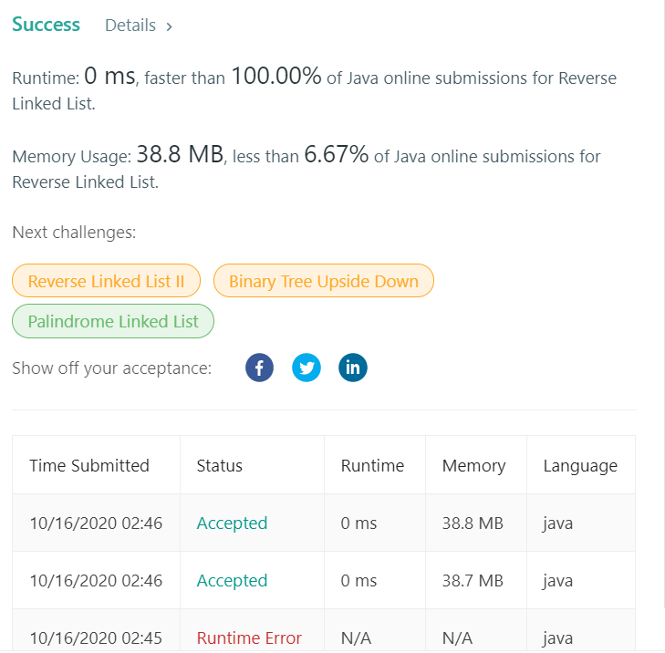

👀 문제
https://leetcode.com/problems/reverse-linked-list/
👊 도전
1. 설계
- 리스트를 역순으로 만들어 리턴한다.
- 반복문과 재귀를 이용한 두 경우를 구현한다.
2. 구현
1
2
3
4
5
6
7
8
9
10
11
12
13
14
15
16
17
18
19
20
21
22
23
24
25
26
27
28
29
30
31
32
33
34
35
36
37
38
39
40
41
42
43
/**
*
* @author HEESOO
*
*/
/**
* Definition for singly-linked list.
* public class ListNode {
* int val;
* ListNode next;
* ListNode() {}
* ListNode(int val) { this.val = val; }
* ListNode(int val, ListNode next) { this.val = val; this.next = next; }
* }
*/
class Solution {
ListNode result;
public ListNode reverseList(ListNode head) {
return iter(head);
// return recur(head);
}
public ListNode iter(ListNode head){ // 반복문
ListNode reverse=null, cur=head;
while(cur!=null){
ListNode rest=cur.next; // 임시 저장
cur.next=reverse; // 현재 cur은 만들어진 reverse를 가리킨다
reverse=cur; // reverse는 항상 맨 앞을 가리키도록
cur=rest; // 다음 노드 탐색
}
return reverse;
}
public ListNode recur(ListNode head){ // 재귀
if(head==null || head.next==null) return head; // 빈 리스트이거나 마지막 노드라면
ListNode reverse=recur(head.next); // 현재까지 생성한 리스트
head.next.next=head; // head의 다음노드는 나를 가리킨다
head.next=null; // 원본 리스트에서 나 이후로는 연결 끊기(재귀로 연결되어있으므로 상관X)
return reverse;
}
}
3. 결과
 🤟 성공 🤟
4. 설명
- Iterative
- 포인터 cur로 리스트를 순회하며, reverse에는 앞에 붙는 새 노드(cur)의 next가 지금까지 생성한 reverse를 가리키는 방식으로 구현한다.
- reverse는 항상 리스트의 앞을 가리켜야 하므로 reverse의 앞에 노드를 추가한 후 reverse=cur이 된다.
- cur의 다음 노드들이 있는 rest가 다시 cur이 된다.
- Recursive
- head는 현재 리스트에서의 위치이다.
- 재귀 탈출 조건은 head가 마지막 노드(head.next==null)이다.
- 원본 리스트 자체가 빈 값일 수 있으므로 head==null 조건을 추가하였다.
- 역순이 되기 위해 내 뒤의 노드는 나를 가리켜야 한다(head.next.next=head)
- 나는 역순 리스트에 포함되었으므로 원본 리스트에서 연결을 끊는다.